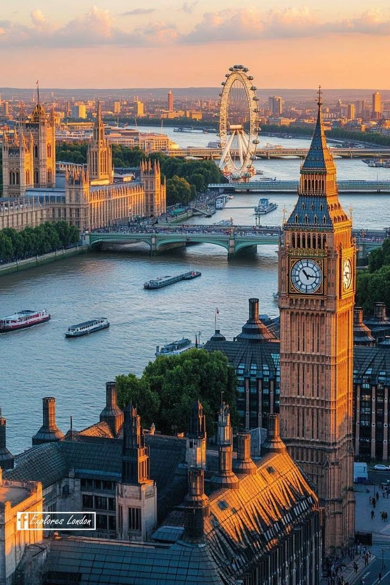
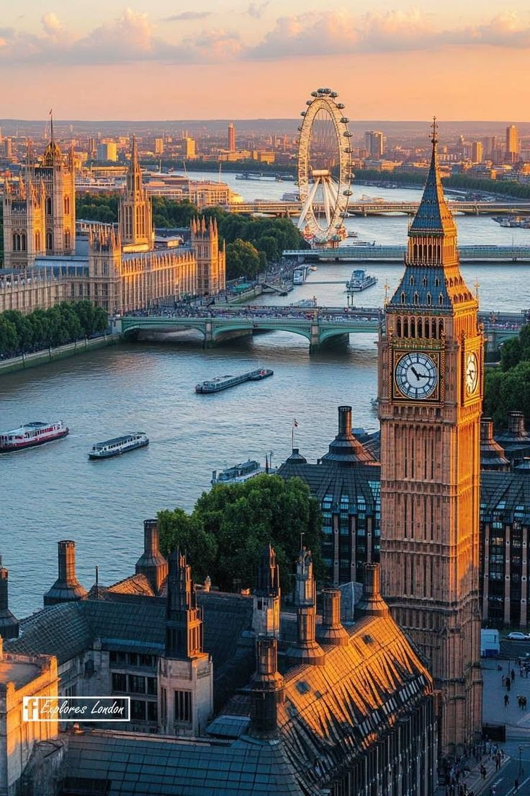

Exploring the paris: The city of light
| by Jane Doe
Paris is one of the most iconic cities in the world. Famous for the Eiffel Tower, Louvre Museum, and charming streets of Montmartre, it is a perfect blend of history, culture, and romance.
During my visit, I tried French cuisine including croissants, escargot, and delicious macarons. Walking along the Seine river at sunset was an unforgettable experience.
Tips for visitors: Buy tickets online for major attractions, use the metro for easy travel, and explore neighborhoods on foot to discover hidden gems.